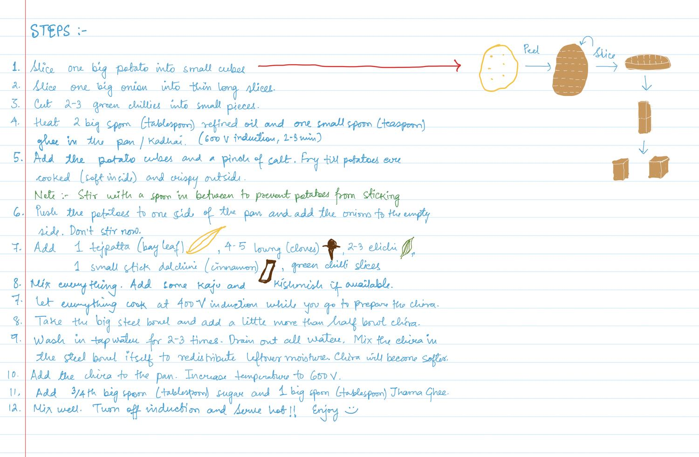

Everyday / Bengal / Assam
Chira
চিঁড়ে
Spicekacha lonka
FromHer handwriting
Tagschira · potato · snack · breakfast · vegetarian
The page is headed only STEPS. The name is a later addition.
STEPS
- 1Slice one big potato into small cubes
- 2Slice one big onion into thin long slices.
- 3Cut 2-3 green chillies into small pieces.
- 4Heat 2 big spoon (tablespoon) refined oil and one small spoon (teaspoon) ghee in the pan / Kadhai. (600 V induction, 2-3 min)
- 5Add the potato cubes and a pinch of salt. Fry till potatoes are cooked (soft inside) and crispy outside. Note :- Stir with a spoon in between to prevent potatoes from sticking
- 6Push the potatoes to one side of the pan and add the onions to the empty side. Don't stir now.
- 7Add 1 tejpatta (bay leaf), 4-5 loung (cloves), 2-3 elichi, 1 small stick dalchini (cinnamon), green chilli slices
- 8Mix everything. Add some kaju and kishmish if available.
- 7Let everything cook at 400 V induction while you go to prepare the chira.
- 8Take the big steel bowl and add a little more than half bowl chira.
- 9Wash in tap water for 2-3 times. Drain out all water. Mix the chira in the steel bowl itself to redistribute leftover moisture. Chira will become softer.
- 10Add the chira to the pan. Increase temperature to 600 V.
- 11Add 3/4th big spoon (tablespoon) sugar and 1 big spoon (tablespoon) Jharna Ghee.
- 12Mix well. Turn off induction and Serve hot!! Enjoy :)
Margin drawing: potato → Peel → Slice → slice → cubes
The numbering runs 1 to 8 and then restarts at 7, as on the page.
